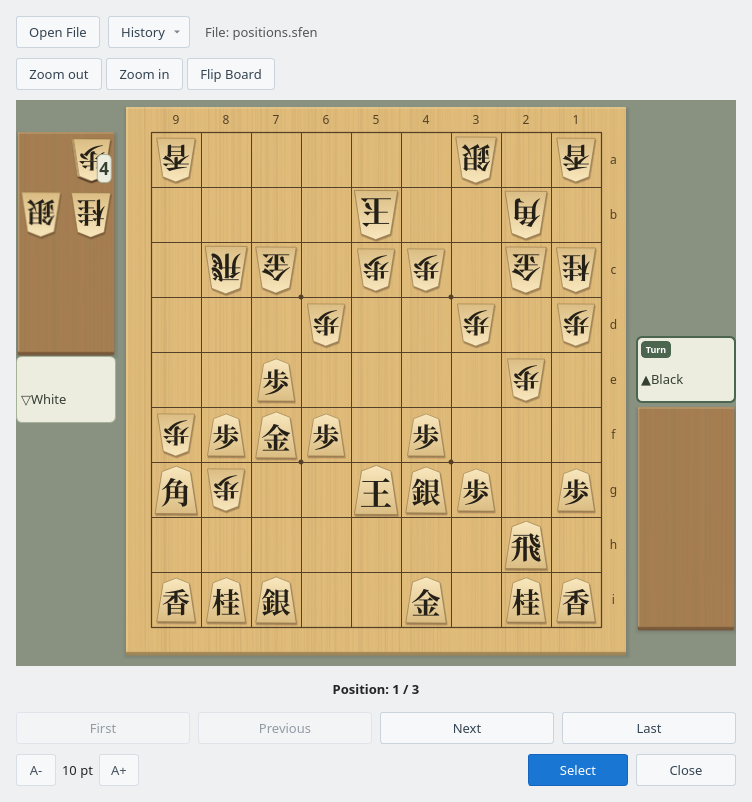
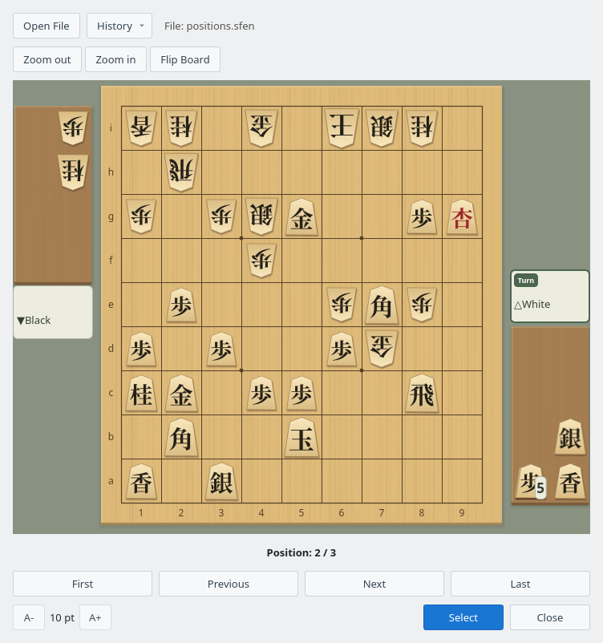
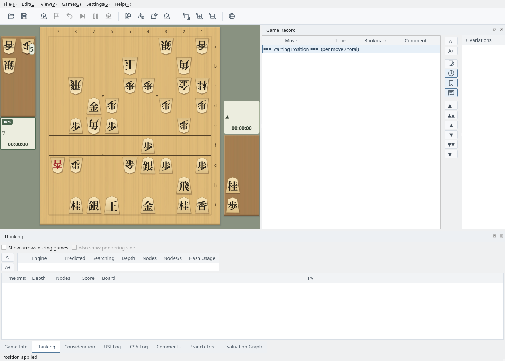

Browse SFEN position collections on a board and import a position
Screenshots were captured on Linux with the English interface.
Prepare a text file with one SFEN position per line
A collection file is a text file (.sfen or .txt) with one position per line. Empty lines and lines starting with “#” (comments) are ignored, so files saved by the Tsume Position Generator open as they are.
Lines that cannot be read as a position (a malformed board or hand, an illegal move, and so on) are skipped, and the number of skipped lines is shown next to the file name. If the file contains no positions at all, a message appears and the collection already on display stays as it is.
# Three positions from Suzuki vs Yamada (October 5, 2026)
l5s1l/4k2b1/1rg1pp1gn/3p2p1p/2P4p1/pPGP1P3/Bp2KSP1P/7R1/LNS2G1NL b sn4p 63
6s1l/4k2b1/1r2pp1gn/2Gp2p1p/1PbP3p1/5P3/+lp2gSP1P/7R1/1NSK1G1NL w NPsl5p 78
6s1l/4k4/4pp1gn/2pp2p1p/1BrP3p1/1sP2P3/K1+b1gSP1P/3+l3R1/5G1NL b GSLP2n5p 101Step through the positions in the viewer
Choose Edit → SFEN Collection Viewer. The viewer is a separate window, so you can keep using the main window while it is open.
Click Open File and choose a collection file; the first position appears on the board. Pieces in hand are shown on the stands, the side to move is marked with the Turn badge on its name, and the line below the board shows which position you are on, such as “Position: 1 / 3”. History opens one of the last five files.

SFEN Collection Viewer: positions.sfen open at position 1 (Black to move)
Use First, Previous, Next and Last to move between positions. Flip Board shows the board from White’s side.
Zoom in and Zoom out (or Ctrl + mouse wheel over the board) change the board size, and the window resizes to fit the board. The board size is kept for the next time. A- and A+ at the bottom left change the size of the buttons and text.

Flip Board: position 2 (White to move) seen from White’s side
Bring the chosen position into the main window
Show the position you want and click Select. It becomes the starting position in the main window, and the game record is reduced to that starting position. From there you can start Consideration Mode, or start a game with Current Position as the starting position.
If the main window has an unsaved game record, you are first asked whether to save it. The imported position is treated as a new game record: Save opens Save As instead of overwriting the record file you had open. The viewer stays open, so you can import another position right away.

Main window: position 2 imported as the starting position